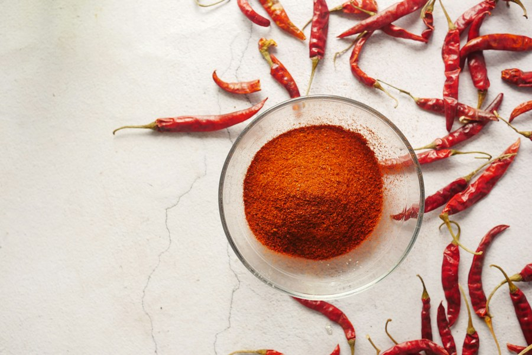
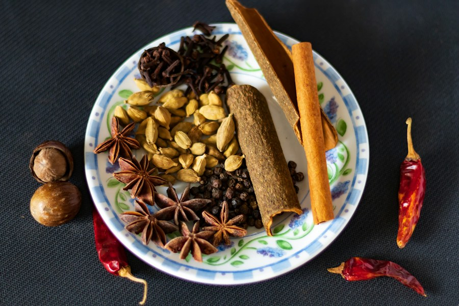

01 हळद
हळद
हळदGOLDEN & WARM
Turmeric Powder
हळद पावडर
A golden kitchen staple, ready for everyday curries and comforting home recipes.
FROM THE HEART OF KOLHAPUR
Discover the goodness of carefully selected spices, prepared with attention to quality and authentic taste.

THE SPICE SHELF
Familiar favourites for the meals, memories and little rituals that make a house feel like home.
हळदGOLDEN & WARM
हळद पावडर
A golden kitchen staple, ready for everyday curries and comforting home recipes.

तिखटBOLD & BRIGHT
लाल तिखट
A lively red addition for dals, sabzis and the dishes you love with a little more kick.
 धणे
धणेFRESH & FRAGRANT
धणे पावडर
A fragrant, familiar favourite to bring a mellow warmth to everyday cooking.
 जिरे
जिरेEARTHY & AROMATIC
जिरे पावडर
A warm, earthy note for dals, tadkas and the everyday dishes on your table.

कोल्हापुरीA TASTE OF KOLHAPUR
कोल्हापुरी मसाले
A spirited blend inspired by the bold, generous flavours of our home region.
For prices and orders, message us on WhatsApp. Contact us for prices →
 TURAMBE · MAHARASHTRAमातीची
TURAMBE · MAHARASHTRAमातीचीA LITTLE ABOUT US
Helio Heritage Foods is a small, family-run spice venture from Turambe, in the Kolhapur district of Maharashtra. Our corner of the world has a deep affection for food that is generous, fragrant and full of character.
We’re building a range of familiar spices and regional blends for local households and businesses, with care for the ingredients and respect for the traditional flavours we grew up with.
WHAT MATTERS TO US
We draw inspiration from the vibrant, familiar tastes of Indian home cooking.
The ingredients we choose are an important first step in every spice we prepare.
We give careful attention to preparation, with quality in mind throughout.
Our roots are in Turambe. Our inspiration comes from the kitchens around us.
FROM SPICE TO TABLE
We approach every batch with attention to the small things that help a spice find its way into your everyday cooking.
Choosing the raw spices that form the foundation of each product.
Sorting and cleaning the ingredients as part of preparation.
Grinding and preparing the spices with attention to the intended blend.
Packaging the prepared spices and making them ready for dispatch.
This is our intended quality workflow. Details may vary by product.
MADE TO SHARE
Whether you’re stocking a neighbourhood shelf or cooking for the people you love, we’d be happy to start a conversation.
Let’s talk about spices ↗A familiar addition to the neighbourhood spice shelf.
For kitchens that cook with warmth and character.
For everyday meals, shared plates and second helpings.
Wholesale and retail enquiries are welcome.
SAY HELLO
For product, wholesale or retail enquiries, get in touch. We’d love to hear from you.
helioheritagefoods@gmail.com ↗+91 94051 18424 ↗COME FIND US
House No. 1405, Gat No. 103/4,FSSAI APPLICATION NO.
30261022127769689
Application submitted; licence pending.